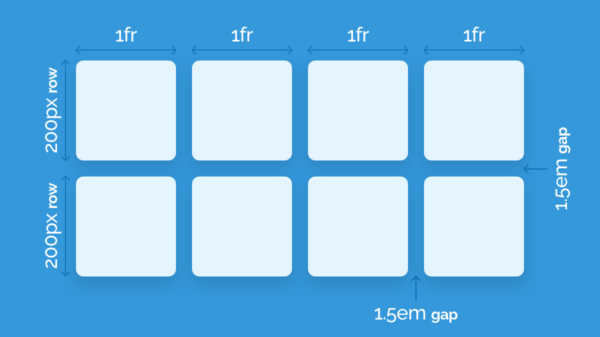
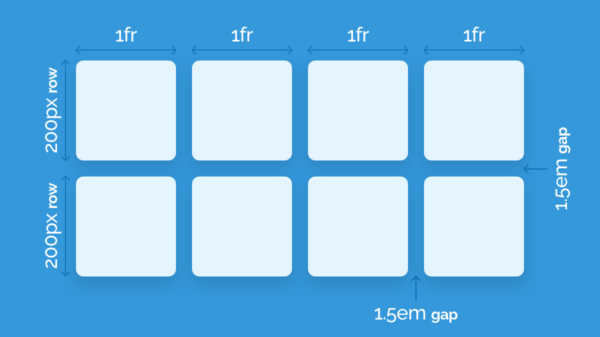

CSS Cascading style sheets
HTML kontrollerer strukturen mens CSS er det som præsenterer det, man bruger nemlig css til at designe HTML. CSS kan blive anvendt på forskellige måder, man kan anvende Inline styles hvilket betyder man kan style et specifikt element inde i html filen, uden at berøre andre elementer. Man kan også vælge at bruge External style sheets hvor man kan ændre hele websitets ved kun at ændre en fil.
Cascading indenfor css betyder at styles fra flere kilder kan kombineres dvs. man kan anvende Inline styles og External style sheets i samme fil. Fordelen ved CSS er at den adskiller layout fra strukturen og der er mulighed for at arbejde responsivt.
CSS Syntaks
CSS har sin egen syntaks, men den er minimal og derfor let at lære. Det mest beskrivende ved syntaksen er at den indeholder en selector og en declaration block. Selectoren peger enten på hvilket HTML element der skal styles, hvilken .class eller hvilken #id. Efter at have skrevet et af de 3 ind skal man lave en lave en declaration block. Indenfor declaration block start: ”{” skriver man egenskaberne og slutter af med declaration block slut: ”}”. Afstanden/WhiteSpace har ingen betydning i forhold til declarations, man gør det for at holde det overskueligt og pænt, hvorimod Afstanden ved selectoren kan have en betydning for at man kommer til at style noget som ikke skal styles. I css kan der styles på flere selectors på samme tid, hvis de er indenunder samme declarations, for at benytte sig af dette skal man adskille selectorsne med et komma fx: {p, h1 { color:blue; }.

CSS Grid
CSS grid er en relativt ny funktion til at placere elementer i et grid. Inden grid kom til verden, var flexbox og float mere populært at anvende, men i modsætning til flexbox er CSS grid to dimensionalt, hvor man kan bestemme hvilken række og hvilken kolonne indholdet skal placeres i. Man angiver kolonner med ”grid-template-columuns” og rækken angives med ”grid-template-rows” efter columns eller rows, skriver man ”fr” som står for fractions, talet der står efter fraction vil bestemme størrelsen
 
